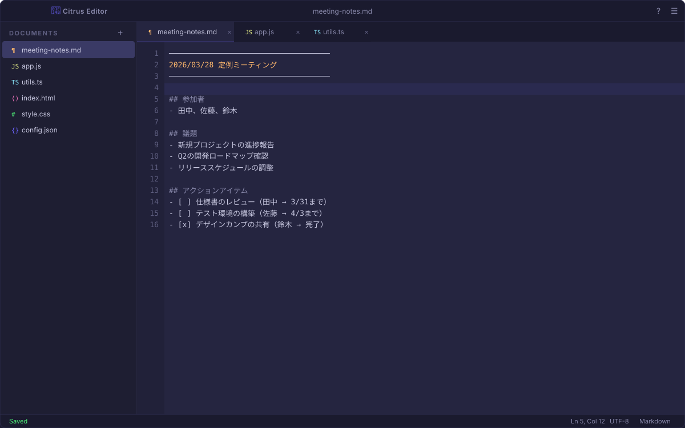
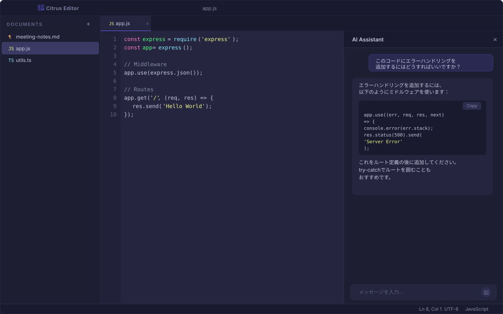
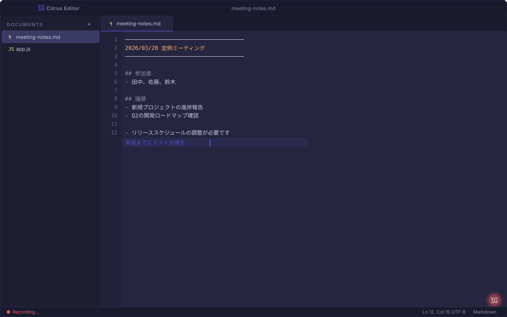
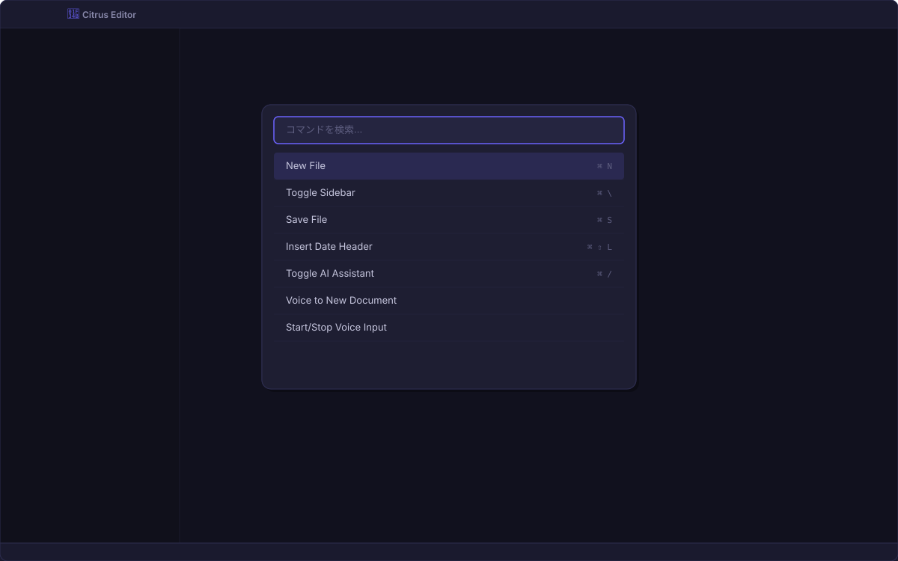

Citrus Editor：AI搭載テキストエディタの開発
議事録作成やコード編集など、日々の業務で使うテキスト作業を効率化するために開発した社内向けWebエディタです。音声入力・AIアシスタント・クラウド保存を軸に、「キーボードから手を離しても仕事が進む」体験を目指しました。
プロジェクト概要
社内では議事録やメモ、ちょっとしたコードの確認作業にさまざまなツールを使い分けており、情報が散逸しがちでした。「ひとつの場所でテキスト作業を完結させたい」というニーズに応えるため、ブラウザだけで使えるテキストエディタを自社開発しました。
ポイント：エディタとしての基本機能を丁寧に作り込みつつ、AI・音声入力といった先進的な機能を統合。ブラウザだけで動作し、インストール不要で社内展開できる設計です。
主要機能
マルチファイル編集
タブ切り替えによる複数ファイルの同時編集。サイドバーのファイルツリーで一覧管理が可能です。
AIアシスタント
Claude APIを統合。開いているドキュメントの内容を踏まえた質問・相談ができます。コード提案もコピー一発。
音声入力
ブラウザの音声認識を活用し、カーソル位置への直接入力と、音声だけで新規ドキュメントを作成する2つのモードを搭載。
クラウド自動保存
Supabase連携により、編集内容を自動でクラウドに保存。端末を変えても続きから作業できます。
ショートカット & コマンドパレット
主要操作はキーボードショートカットに対応。コマンドパレットからすべての機能にアクセスできます。
多言語ファイル対応
HTML, CSS, JavaScript, TypeScript, JSON, Markdownなど主要な形式に対応。拡張子による自動判定でアイコンも変化します。
画面紹介
エディタ全体画面
左側のサイドバーにファイル一覧、中央がエディタ領域、下部にステータスバーというレイアウトです。Atom風のダークテーマで、長時間の作業でも目が疲れにくい配色を採用しています。

メインエディタ画面 - サイドバー・タブ・行番号・ステータスバーを備えたフルエディタ
AIアシスタント
⌘ / でAIパネルを開くと、画面右側にチャットUIが表示されます。現在開いているドキュメントの内容をコンテキストとしてAIに渡すため、「このコードにエラーハンドリングを追加して」といった文脈依存の質問にも対応します。AIの回答にコードブロックが含まれる場合は、シンタックスハイライト付きで表示され、ワンクリックでコピーできます。

AIアシスタントパネル - コード提案をコピーボタンで即座にエディタに反映
音声入力
マイクボタンを押すと音声入力モードに入ります。認識中のテキスト（interim transcript）はリアルタイムでエディタ上にプレビュー表示され、確定するとカーソル位置に挿入されます。議事録のリアルタイム作成に特に威力を発揮します。

音声入力中の画面 - リアルタイムで認識結果がプレビュー表示される
コマンドパレット
⌘ Shift K でコマンドパレットを呼び出し、ファイル作成・AI起動・音声入力など全機能にキーボードだけでアクセスできます。ショートカットキーも一覧表示されるため、操作を覚える助けにもなります。

コマンドパレット - すべての機能にキーボードだけで到達可能
技術構成
| フロントエンド | Next.js + React（TypeScript）。SSRを使わず、クライアントサイドでの操作性を最優先にした構成。 |
|---|---|
| バックエンド / DB | Supabase（PostgreSQL）。ドキュメントの永続化と自動保存（1秒デバウンス）を担当。 |
| AI連携 | Anthropic Claude API。Next.js APIルートからストリーミング応答を返し、リアルタイムに表示。 |
| 音声認識 | Web Speech API（ブラウザネイティブ）。日本語（ja-JP）に最適化。カスタムフックで抽象化。 |
| 状態管理 | React Hooks（useDocuments, useSpeechRecognition）による軽量な状態管理。外部ライブラリ不使用。 |
| スタイリング | CSS変数を活用したカスタムテーマ。UIフレームワーク非依存で、軽量かつ細かい制御が可能。 |
こだわりポイント
エディタとしての地道な作り込み
括弧の自動補完、Tabキーによるスペース挿入、選択テキストの括弧囲み、日付ヘッダーのワンタッチ挿入（⌘ Shift L）など、日常的に繰り返す操作を丁寧にサポートしています。日本語IMEとの組み合わせ（compositionイベントの適切な処理）にも対応し、日本語環境でストレスなく使えます。
音声からのドキュメント直接作成
「音声で新規ドキュメント」モードでは、話すだけで新しいファイルが作成されます。急なメモや、PCの前に座れない状況での記録に便利です。AIパネル内でも音声入力が使えるため、タイピングせずにAIへ質問を投げることも可能です。
AIがドキュメント全体を理解
AIに質問を送ると、現在開いている全ドキュメントの内容がコンテキストとして渡されます。ファイルを横断した質問や、プロジェクト全体を踏まえた提案が可能です。応答はストリーミングで逐次表示されるため、待ち時間のストレスもありません。
モバイル対応
レスポンシブデザインにより、スマートフォンやタブレットからもアクセス可能です。小画面ではサイドバーが自動的に折りたたまれ、モバイル向けのツールバーが表示されます。外出先からの簡単な編集にも対応しています。
成果と今後
社内で実際に日常利用されており、特に議事録の音声入力とAIによる要約・整理のワークフローが好評です。「議事録を取りながらAIに要点をまとめてもらう」という使い方が定着しつつあります。
今後はリアルタイム共同編集、バージョン履歴、プラグイン機構など、チームでの利用をさらに促進する機能の追加を検討しています。